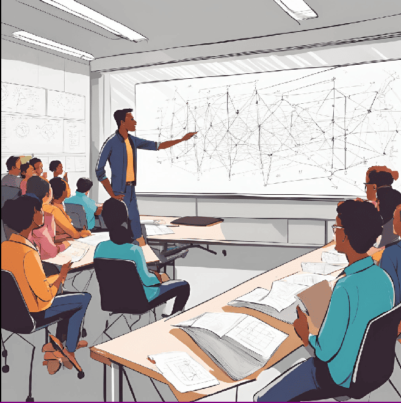

2. Introducción
La teoría y manipulación de gráficas es un campo que combina tanto fundamentos teóricos como aplicaciones prácticas, ofreciendo técnicas para modelar y resolver problemas complejos en diferentes disciplinas científicas y tecnológicas.
La Teoría de Gráficas es un área de las matemáticas y la informática que se dedica al estudio de estructuras discretas conocidas como gráficas o grafos.
Los grafos son estructuras que permiten modelar relaciones entre objetos mediante nodos (o vértices) y conexiones (aristas). La manipulación de gráficas se refiere a las técnicas y herramientas utilizadas para crear, modificar, y analizar gráficas.
Esto incluye desde agregar o eliminar vértices y aristas, hasta aplicar algoritmos específicos de búsqueda, como el recorrido en anchura (BFS) y en profundidad (DFS).
Estas técnicas son cruciales para resolver problemas de optimización, como la búsqueda de caminos más cortos, la detección de ciclos y el análisis de conectividad.
Existen diversas herramientas de software que facilitan el trabajo con gráficas, estas permiten modelar gráficas complejas, aplicar algoritmos avanzados, y visualizar las estructuras para un análisis más profundo. Estas herramientas simplifican la implementación de algoritmos, el análisis de grandes conjuntos de datos y la resolución de problemas prácticos en redes y sistemas complejos.
